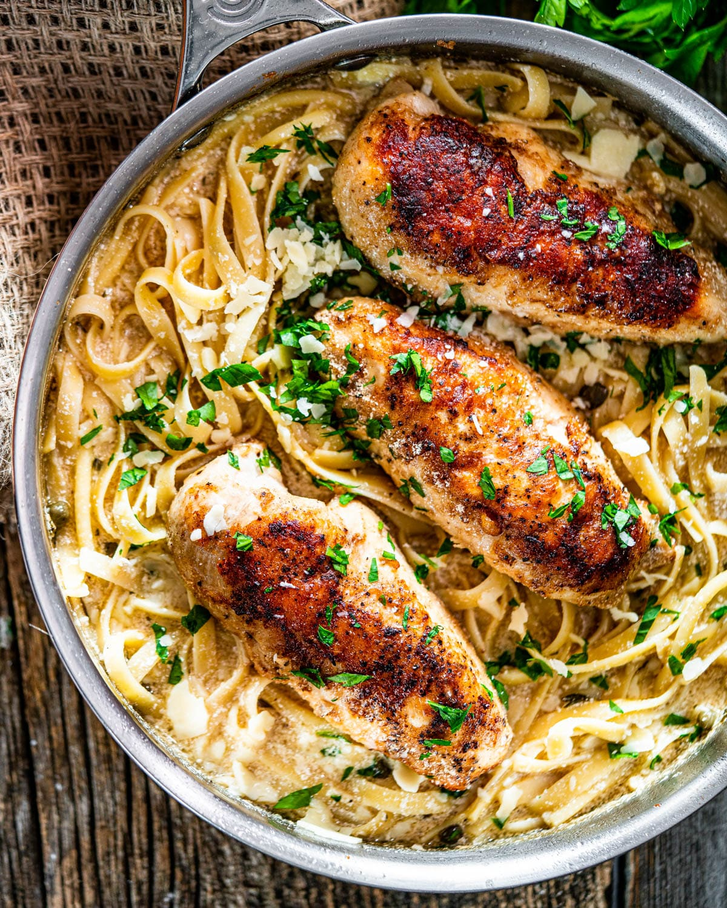

Chicken Picatta

Description
Grilled rockfish sandwiches need only a 30-minute beer and mustard marinade, a brief time on the grill, a few simple toppings, and dinner is done.
Ingredients
- 1/4 cup light beer
- 1/4 cup Dijon mustard
- 1 teaspoon garlic powder
- 1 teaspoon lemon pepper seasoning
- 4 (6 ounce) rockfish filets
- 4 hamburger buns
- 4 romaine lettuce leaves
- 4 tomato slices
- 4 tablespoons mayonnaise
Directions
- Whisk beer, Dijon mustard, garlic powder, and lemon pepper seasoning together in a bowl. Pour into a resealable plastic bag.
- Add rockfish filets, coat with the marinade, squeeze out excess air, and seal the bag. Marinate in the refrigerator for 30 minutes.
- Preheat an outdoor grill for medium-high heat and lightly oil the grate.
- Grill rockfish on the preheated grill until filets flake easily with a fork, about 4 minutes per side. Toast hamburger buns on the grill until grill marks for, about 2 minutes.
- Divide mayonnaise between toasted hamburger buns. Top each bun with one portion of cooked rockfish, one tomato slice, and one lettuce leaf.